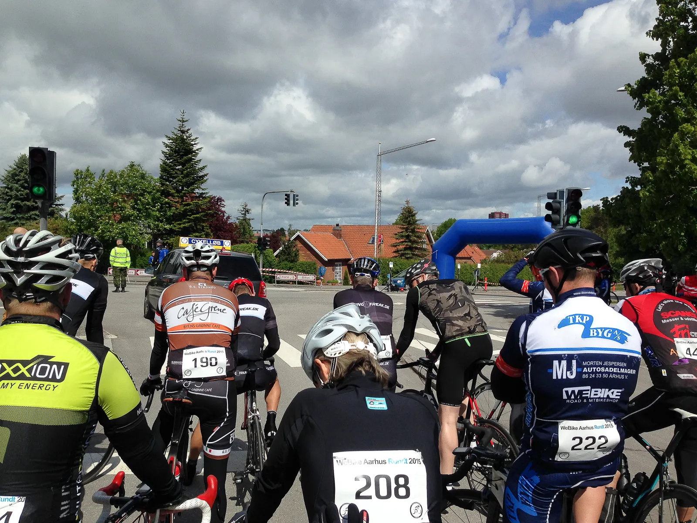
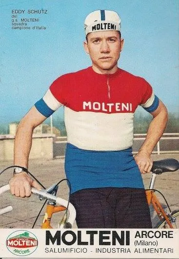
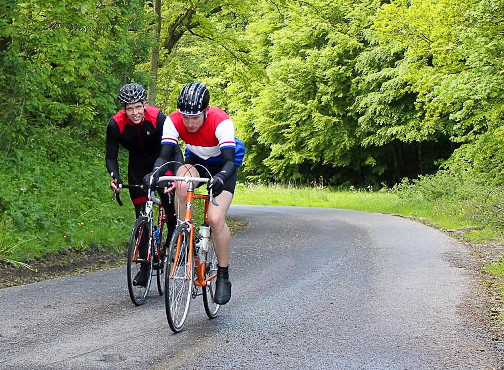
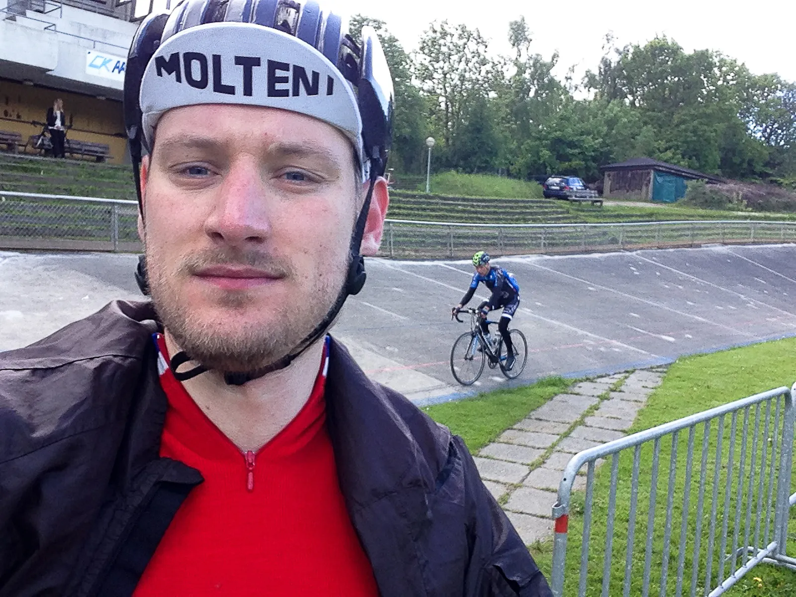

Aarhus Rundt 2015: Overhalet af kvinde med indkøbskurv

Aarhus Rundt 2015 bød på en miserabel sæsondebut for den Luxembourgske mester Eddy Schütz. I sit første løb for Squadra Molteni blev han overhalet af kvinder på vej hjem fra indkøb.
Det blev et løb med 150 ryttere som startede i styrtende regnvejr og masser af vind, og sluttede i strålende solskin på Cyklebanen i Aarhus.

På de sidste 10 kilometer gik han totalt ned med flaget, og måtte resignerende køre over stregen.
– Jeg havde helt sikkert ikke fået spist nok, og havde ikke mere i dunkene, da der manglede 30 kilometer.
Aldrig har jeg prøvet noget lignende, til sidst var det som om jeg blev overhalet af ryttere på familieruten, sagde Eddy Schütz efter løbet.
Eddy trak det korte lod, da der blev uddelt pladser til holdløbet midt på ugen, hvor Squadra Molteni kørte sig til en flot podieplacering.

Han tog i stedet nogle bakkeintervaller, og var fast besluttet på at bevise sit værd i dagens 91 kilometer kuperede løb.
Et Aarhus Rundt 2015 i styrtende regn
Starten gik i styrtende regn, og der blev kørt lidt smånervøst fra starten. Den hårde vind lagde en dæmper på angrebslysten, og ingen havde held til at komme væk.
Først da feltet ramte Lyngbygaardvej efter 20 kilometer, fik to ryttere hul. Og da Team Astana (aka Team TKB Byg) havde én med, stoppede de 10 andre med at ville føre.
– Der blev lidt klubtur over det, og det var først da vi ramte Stjær bakkerne, at næste udskilning kom.
Jeg blev isoleret og måtte sidde alene de næste 6-7 kilometer. Herefter kom jeg i en mindre gruppe på 12-15 mand, fortæller han.
Feltet ramte bakkerne ved Stiling sø efterfulgt af den benhårde Bjergvej der stiger med 8,5%, hvor Eddy Schütz blev sat af, og måtte bruge en del kræfter på at køre gruppen op.

En gruppe som nu var nede på 6 mand.
Det blev en solo jagt over 5 kilometer, men den tog hårdt på kræfterne, og i Mårslet måtte han slippe, og lod sig falde tilbage til forfølgergruppen.
På Moesgaard gik det helt galt: 10 km. på 27 min.
– Lige før Fulden kunne jeg mærke at det var slut. De andre ville have mig frem, men jeg havde ikke noget.
På Moesgaard gik det helt galt. De sidste ti kilometer var nærmest flade, men var de hårdeste jeg nogensinde har kørt.
En underlig følelse. Jeg kunne næsten ikke holde mig på cyklen, og det syrede i hele kroppen.
Mine øjenlåg var så tunge, at jeg følte hvis jeg lukkede dem i mere end to sekunder ville jeg falde i søvn.
Det tog Schütz 27 minutter at tilbagelægge de sidste 10 kilometer. Han måtte se sig overhale af ryttere på citybikes på vej hjem fra indkøb.
Han kørte i mål som nr. 22 i tiden 2:51:27, det rækker til en 9. plads i aldersklassen 20 – 39 år.

– Jeg bliver overhalet af 7 eller 8 ryttere til sidste.
Det er brand ærgerligt, men jeg gjorde hvad jeg kunne, og ærede trøjen på bedste vis.
De fleste cykelryttere har sikkert prøvet at gå ned på den måde, og det er en uerfaren fejl jeg har begået – det har jeg så også prøvet nu.
Jeg håber at få flere chancer, så jeg kan vise holdejerne, at der skal et par nuller ekstra på kontrakten næste år, slutter han.